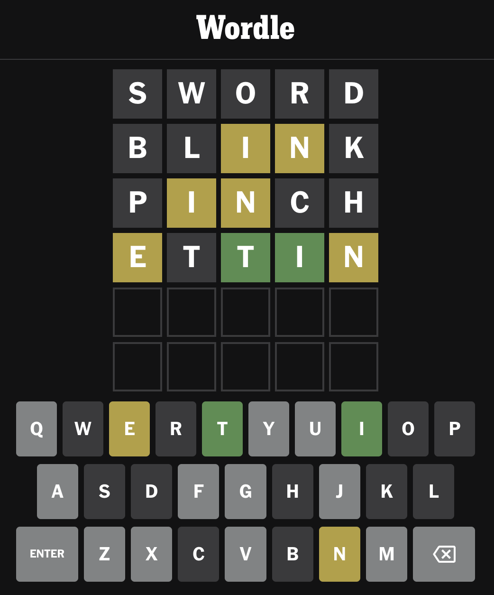

Mamy przygotowane słowniki, na dzisiejszych zajęciach zaczniemy programować faktyczną grę.
Główna pętla gry
Praktycznie każda gra komputerowa polega na cyklicznym powtarzaniu jakichś czynności. Przykładowo, w szachach taką czynnością będzie wybranie kolejnego ruchu i może trwać nawet kilka minut. W Minecrafcie jeden cykl pętli trwa kilkanaście milisekund – w każdym momencie gracz może coś zacząć robić albo poczekać. W przypadku gier tego typu brak akcji też w zasadzie jest akcją – czekaniem.
Najczęściej, w każdym przebiegu pętli wyświetlamy coś na ekranie, sprawdzamy, czy gracz chce wykonać jakąś akcję, zmieniamy stan gry i wracamy na początek pętli. Podobnie będzie w przypadku Wordle’a:

Posiłkując się tym obrazkiem, rozpiszmy, co powinna robić nasza główna pętla gry:
Powtarzaj w kółko:
Wypisz poprzednio wpisane wyrazy, oceniając każdy z nich
Narysuj klawiaturę z zaznaczonymi literami
Wczytaj kolejny wyraz
Dodaj go do listy wczytanych wyrazów
Drugi punkt – rysowanie klawiatury – na początku pominiemy. Jest to fajny dodatek do gry, który nieco ułatwia zobrazowanie jakich literek jeszcze nie gracz nie próbował użyć, ale nie jest absolutnie konieczny.
Brakuje nam natomiast warunków końca gry: gracz wygrywa, jeśli ostatni wpisany wyraz jest taki sam jak wylosowane hasło (które, swoją drogą, wypadałoby wylosować przed rozpoczęciem gry); jeśli nie udało się odgadnąć hasła po 6 próbie, gra kończy się porażką.
+Wczytaj słownik sensownych pięcioliterowców i wylosuj hasło
Powtarzaj w kółko:
Wypisz poprzednio wpisane wyrazy, oceniając każdy z nich
- Narysuj klawiaturę z zaznaczonymi literami
+ Jeśli ostatni wpisany wyraz jest taki jak wylosowane hasło
+ Gra kończy się wygraną
+ Jeśli było już 6 prób
+ Gra kończy się przegraną
Wczytaj kolejny wyraz
Dodaj go do listy wczytanych wyrazów
Kolejna kwestia jest taka, że gra powinna akceptować jedynie prawdziwe wyrazy, a nie dowolne pięcioliterowe teksty:
Wczytaj słownik sensownych pięcioliterowców i wylosuj hasło
+Wczytaj słownik wszystkich poprawnych pięcioliterowców
Powtarzaj w kółko:
Wypisz poprzednio wpisane wyrazy, oceniając każdy z nich
Jeśli ostatni wpisany wyraz jest taki jak wylosowane hasło
Gra kończy się wygraną
Jeśli było już 6 prób
Gra kończy się przegraną
Wczytaj kolejny wyraz
+ Jeśli wyraz znajduje się w słowniku
+ Dodaj go do listy wczytanych wyrazów
+ W przeciwnym razie
+ Zignoruj go (albo pokaż komunikat o błędzie)
Ocenianie
Większość rzeczy w powyższym pseudokodzie przerabialiśmy na wcześniejszych zajęciach. Nieco bardziej skomplikowanym kawałkiem kodu będzie ocenianie wyrazów. Proponuję wydzielić sobie to do osobnej funkcji i na razie zająć się całą resztą kodu.
Nasza funkcja oceniająca będzie przyjmować hasło oraz oceniany wyraz i powinna zwrócić ocenę każdej litery w podanym wyrazie. Litera może być w 100% trafiona (kolor zielony), może znajdować się w haśle, ale na innym miejscu (kolor żółty/pomarańczowy), albo być całkowicie nietrafiona. Nie pasuje to do żadnego typu danych wbudowanego w język Kotlin, więc powinniśmy stworzyć własny typ.
Najbardziej pasuje tu enum class – za każdym razem, gdy mówicie “jakiś obiekt może być tym, tamtym, albo siamtym”, powinniście spróbować użyć właśnie tej konstrukcji.
enum class Ocena { PUDŁO, TRAFIONE, NIE_NA_TYM_MIEJSCU }
Na razie nie będziemy pisać tej funkcji, zwrócimy losowych pięć wartości (po jednej na literkę w wyrazie), po to, żeby przetestować, czy reszta programu działa poprawnie i rysuje wszystko tak, jak należy. Może to wyglądać np. w ten sposób:
fun oceń(wyraz: String, hasło: String): List<Ocena> {
return listOf(
Ocena.PUDŁO,
Ocena.TRAFIONE,
Ocena.NIE_NA_TYM_MIEJSCU,
Ocena.NIE_NA_TYM_MIEJSCU,
Ocena.PUDŁO,
)
}